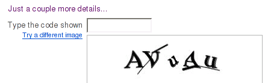
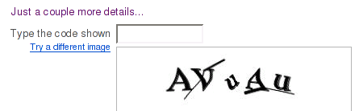

Yahoo CAPTCHA is broken
Tuesday, January 22nd, 2008According to the hmm… press-release (formally, it’s a blog entry, but the style is very press-releasish), the Yahoo CAPTCHA is broken.

This blog is retired.
According to the hmm… press-release (formally, it’s a blog entry, but the style is very press-releasish), the Yahoo CAPTCHA is broken.

Have you ever heard about XRumer? Even if not, you face with it every day. It’s that industry-leading program which delivers spam messages to your forums and blogs. XRumer is a wonderful piece of software. Unfortunately, it fights on the dark side.
Anyway, it’s always interesting to learn more about people behind great software. Recently I found an interview with Aleksandr Ryanchenko (“botmaster”), the author of XRumer. Translation to English is below. Thanks Aleksandr Nikolayev (“square”) for interviewing!
Many people, including me, believe that security by obscurity gives a false sense of security. Any security tool must be available in source code, even to bad guys. But Advanced Textual Confirmation (ATC) is encoded. Why?
It’s all about the business. If I deliver the tool as is, some “alternatively smart” programmer can copy/paste the code in a few minutes and start selling the clone. This is my worry: “alternatively smart” programmers.
To satisfy those who are against security by obscurity, I’m diclosing the ATC internals is this post. Warning: to understand the text in full, you have to be a web programmer.
Just stumbled upon the article “Using AI to beat CAPTCHA and post comment spam”. There is a number of projects related to breaking CAPTCHAs and a number of articles on the topic, but this article strikes me most, because of:
You can have the best anti-spam protection on the planet and still find yourself getting spammed by actual human beings who aren’t using any robots. Fortunately, with the number of forums and blogs on the ‘net, the chances of yours getting targeted by the lone typing monkey is slim. Even so, it does happen.
CAPTCHA has been broken. Not just once, but over and over again. In fact, do a search for “CAPTCHA breaker” or “CAPTCHA hack” and you’ll find plenty of web sites that are all too happy to tell spammers how to get around the image tokens that CAPTCHA scripts use to try to keep unwanted people out.
Someone has asked Google how to bypass Textual Confirmation. Great! The alternative to CAPTCHA is taking off, even spammers noticed it. Now they’ve started to think about bypassing. Would you mind to help them and share ideas?
Here’s a not-so-funny joke that actually has a whole lot more to do with protecting your blog from spam than you might think. The joke is from the article discussed in my last blog entry. If you recall I said I’d speculate on the meaning of this joke next time around. So here’s the joke for all you who’ve not taken time to read Ned’s article about a simple way to protect your site:
The SPAM wars continue, and they’re not taking place a long, long time ago in a galaxy far, far away. They’re taking place in forums, Wikis and blogs right here and right now. And while the good guys always win in the movies, this real-life battle is too close to call. In fact, many of the good guys are dropping like flies or throwing their hands up in surrender as they cave in to the pressure of fighting off the spamming hordes.
RSS:
|